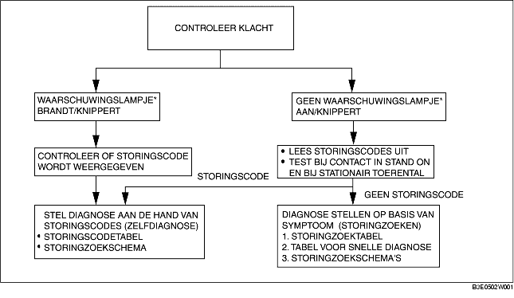

VOORWOORD [FN4A-EL]
B3E050219090W02
• Als een auto met een storing de werkplaats binnenkomt, controleer dan of het storingsindicatielampje en het waarschuwingslampje AT branden. Lees de storingscodes uit en ga vervolgens storingzoeken overeenkomstig onderstaand storingzoekschema.
-
- Ga naar het desbetreffende storingzoekschema als er een storingscode aanwezig is. (Zie STORINGSCODETABEL [FN4A-EL].)
-
- Als het waarschuwingslampje AT en het storingsindicatielampje niet gaan branden, zijn er geen storingscodes opgeslagen. Ga in dat geval storingzoeken aan de hand van het desbetreffende storingzoekschema. (Zie TABEL STORINGZOEKSCHEMA'S.)

*:Storingsindicatielampje (MIL), waarschuwingslampje AT